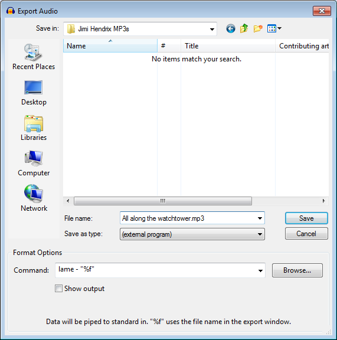

Exporting to an External Program
This is a way to export to the installed LAME MP3 encoder or FFmpeg encoder with additional parameters not supported in the options dialogs in the Export Audio Dialog. Command-line export could also be used to export to the very latest versions of LAME or FFmpeg, to an alternative MP3 encoder or to a specialised encoder in a format not otherwise supported by Audacity.
- Accessed by: , then choose (external program) from the Save as type dropdown menu.
- 
- Also accessed by: then choosing (external program) from the Save as type dropdown menu.
Specify Export location
From the Export Audio dialog, choose the file name and suitable extension.
Format Options
In the Command: box type:
- The path to the program
- If the program syntax requires it, space then the infile command
- Space, hyphen
- If required, space then valid output options for the file
- If the program syntax requires it, space then the outfile command
- Finally (assuming file output), space then "%f".
The "%f" command passes the file name and extension entered in the Export Audio dialog as the output file of the external program. Two default commands are provided:
| lame - "%f" |
and
| ffmpeg -i - "%f" |
The "Command" box holds up to the last 12 items entered. When a thirteenth command is entered, the first one (at the bottom of the list) is removed.
Setting the path to the encoder
Accessing the LAME or FFmpeg command-line program with just the "lame" or "ffmpeg" command only works on Windows and Linux, assuming LAME or FFmpeg are installed on the system in the standard location. On Windows, this requires that you used the LAME or FFmpeg EXE installer and did not change the installation directory.
For using a zip version of LAME or FFmpeg and on Mac, the full path to the command-line program must be given. The path must be enclosed inside quotes if there are any spaces in the path. You can use the Browse button to find and open the executable application which will add the correct path to the command.
LAME examples
If you are exporting to MP3 with LAME, there is a complete list of commands including metadata tags on the usage page.
For example, the default LAME command creates a 64 kbps (mono) or 128 kbps (stereo) constant bit rate MP3 at quality level "3".
| lame - "%f" |
To produce a variable bit rate MP3 of minimum 112 kbps bit rate, with a copyright marker and CRC error checking enabled:
| lame - -v -b 112 -c -p "%f" |
By default, both ID3v1 and ID3v2 tags are exported. The following command writes a title tag "my song title" and year tag "2001" in ID3v1 (at the bottom of the file) and ID3v2 (at the top of the file):
| lame - --tt "my song title" --ty 2001 "%f" |
To export only ID3v1 or ID3v2 tags use --id3v1-only or --id3v2-only, for example:
| lame - --id3v1-only --tt "my song title" --ty 2001 "%f" |
FFmpeg examples
If exporting using FFmpeg, you can view the FFmpeg command-line usage in the FFmpeg documentation. Guidance on valid metadata tags for various formats supported by FFmpeg can be found at http://wiki.multimedia.cx/index.php?title=FFmpeg_Metadata. For example this command exports to 256 kbps MP2 using FFmpeg:
| ffmpeg -i - -acodec mp2 -ab 256000 "%f" |
Next, here are two example commands that use "-strict experimental" to specify the native FFmpeg AAC encoder. The native encoder is required to export more than stereo, up to a maximum of 6 channels. To export up to 8 channels you must point the same command to latest FFmpeg-git. Change the value before "k" in the following command to set a different bit rate in kbps. Note: "-strict experimental" is not required in this command if using latest FFmpeg-git:
| ffmpeg -i - -strict experimental -c:a aac -b:a 240k "%f" |
The following command specifies a VBR quality range instead of bit rate:
| ffmpeg -i - -strict experimental -c:a aac -q:a 10 "%f" |
Here is an example of a command to FFmpeg in an arbitrary location on Windows, forcing the exported codec to Apple lossless. When specifying the file name above the command, add the extension ".m4a" (without quotes), not .alac:
| "E:\FFmpeg for Audacity\ffmpeg.exe" -i - -acodec alac "%f" |
Finally, here is an example command to FFmpeg in an arbitrary location on Mac, setting metadata for genre and artist/composer in an exported M4A file with the standard AAC (lossy) codec:
| /Applications/FFmpeg_for_Audacity_on_OSX/ffmpeg -i - -metadata genre="pop" -metadata author="Jo S" "%f" |
FLAC examples
See https://xiph.org/flac/documentation_tools_flac.html for FLAC command-line syntax and options.
This command exports a FLAC file without any options:
| "C:\Program Files (x86)\FLAC\flac.exe" - -o "%f" |
This command exports a FLAC file, specifying TITLE and ARTIST tags:
| "C:\Program Files (x86)\FLAC\flac.exe" - -T "TITLE=Bohemian Rhapsody" -T "ARTIST=Queen" -o "%f" |
Other controls
- Opens a "Find path to command" window where you can select the command-line program you want to use. Clicking "Open" will then enter the path to that program in the "Command:" box, ready for you to add the commands and "%f" after the path.
 Show output If checked, a Command Output window in Audacity will display a success or failure message from the external program. If unchecked, the window will only appear in the case of an error message.
Show output If checked, a Command Output window in Audacity will display a success or failure message from the external program. If unchecked, the window will only appear in the case of an error message.
Limitation
Audacity will not be able to export more than 16-bit depth for uncompressed formats because the STDIN it sends to the executable application is limited to 16-bit integer.